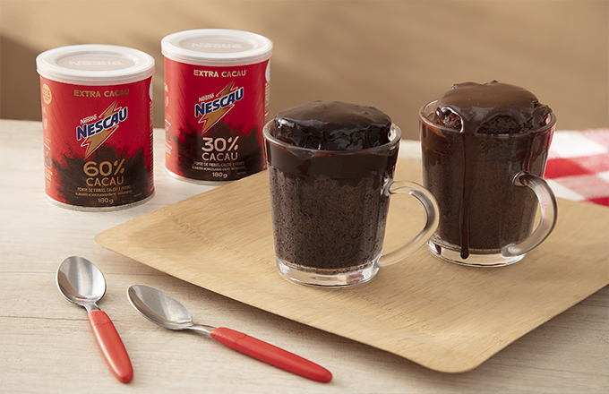
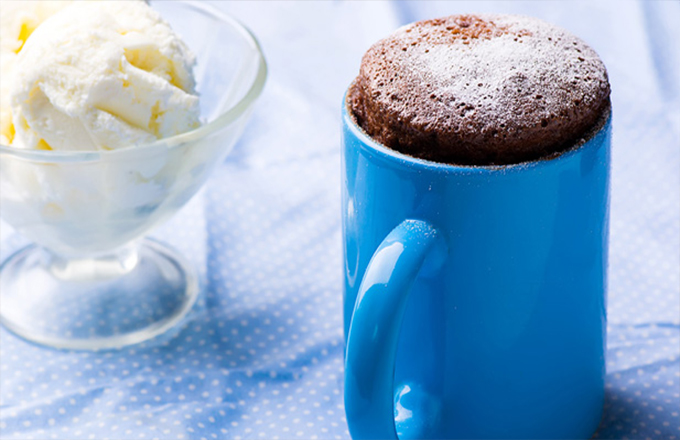
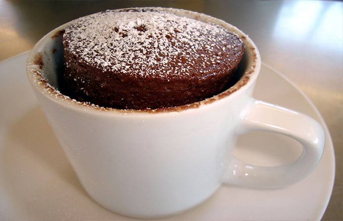
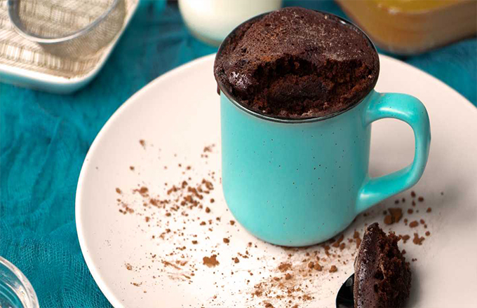
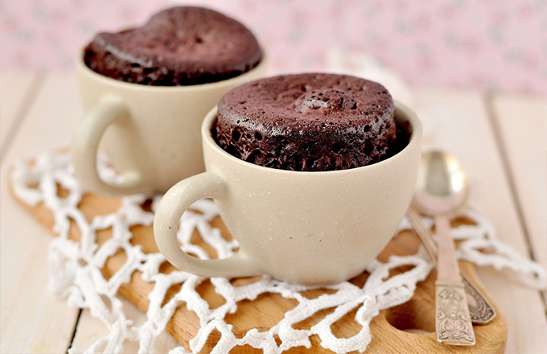

Buscar
Voltar para Receitas
❮
    
❯
Bolo de Caneca de Chocolate
Tempo de preparo:
5 Minutos
Ingredientes:
4 colheres (sopa) de farinha de trigo
4 colheres (sopa) de açúcar
2 colheres (sopa) de chocolate em pó
1/4 de colher (chá) de fermento em pó
3 colheres (sopa) de leite
3 colheres (sopa) de óleo
1 ovo
Modo de Preparo
Em uma caneca grande (mínimo 300 ml), misture a farinha, o açúcar, o chocolate em pó e o fermento.
Adicione o leite, o óleo e o ovo, misturando bem até formar uma massa homogênea.
Leve ao micro-ondas em potência alta por aproximadamente 3 minutos.
Espere esfriar um pouco e aproveite!
Dicas adicionais:
Se quiser um bolo mais fofinho, peneire a farinha e o chocolate antes de misturar.
Adicione pedaços de chocolate para um efeito derretido no meio.
Finalize com cobertura de brigadeiro ou leite condensado para um toque especial.

 4 colheres (sopa) de farinha de trigo
4 colheres (sopa) de farinha de trigo 4 colheres (sopa) de açúcar
4 colheres (sopa) de açúcar 2 colheres (sopa) de chocolate em pó
2 colheres (sopa) de chocolate em pó 1/4 de colher (chá) de fermento em pó
1/4 de colher (chá) de fermento em pó 3 colheres (sopa) de leite
3 colheres (sopa) de leite 3 colheres (sopa) de óleo
3 colheres (sopa) de óleo 1 ovo
1 ovo